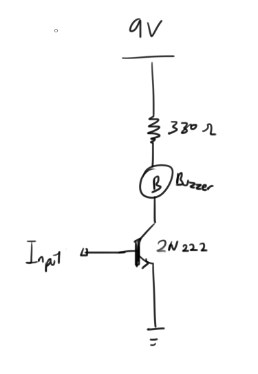
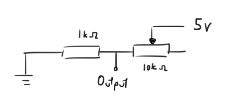
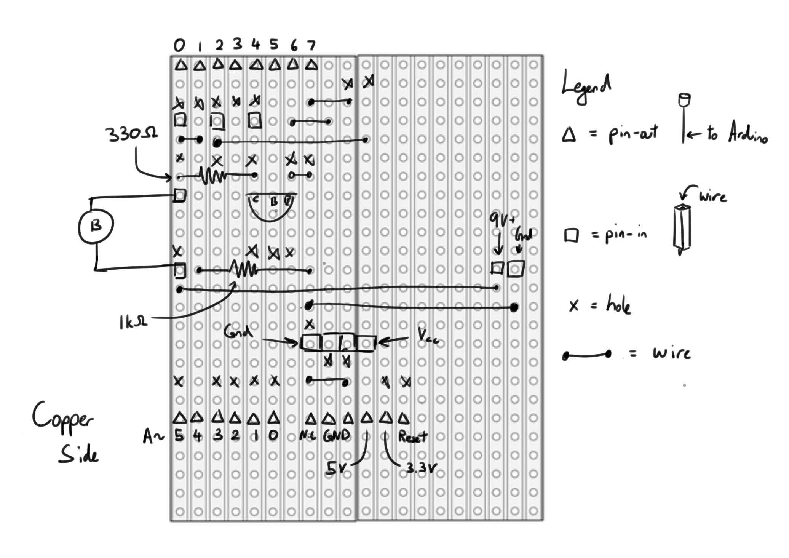

Invisible Tripwire Alarm
Abstract
Have you ever been falsely accused? Been wronged because the other party did not know what you have done? Well I have. I have always been a diligent student, doing all my homework before playing games or watching cute dog videos on Youtube. However, my parents (or guardian for this matter) always comes in the wrong moments to see me always playing and never studying. My guardians always have bad timing to come check on me to see me shouting at my friend across the web. When I am studying, they do not come in at all.
So what do I do? Should I then study 24/7 so that they can finally "catch" me playing?
NO
I'm an engineer and we solve problem by creating products, so I have decided to make a notification system that will notify me when someone is entering my room (NOTE: There was another problem on how they can come in without me knowing too, so now I'm going to solve 2 problem with 1 solution)
The system will be an Arduino shield that uses ultrasonic sensor to act as the "invisible tripwire" and a buzzer to notify me.
Component List
You would need...
1x Arduino Uno
1x Stripboard (at least 15 holes by 20 holes)
1x 8pin leg
2x 6pin leg
1x Buzzer
1x 2N222 BJT Transistor
1x 330Ω resistor
1x 1kΩ resistor
1x Potentiometer (10kΩ)
1x Ultrasonic sensor
1x 9V battery
A bunch of wire (not really actually, but oh well)
The S.H.I.E.L.D
For those who are curious how we are going to wire the individual components, here are the schematic for the individual parts namely the buzzer and the potentiometer (ultrasonic sensor just plug and play so no schematic)
The above is the schematic for the buzzer. Transistor to control the current flow resistor to limit the current to protect the buzzer
Here the second one is the potentiometer schematic, we will be using the analog reader on the Arduino to read the voltage level across the 1kΩ resistor. (Any value is ok, but 1k so we have a nicer gradient when varying the potentiometer which is 10kΩ
Now with everything that you have, you can start soldering everything onto the stripboard
The "x"s on the board are holes that needs to be drilled onto the copper lanes to prevent them from conducting
Lines are wires, and the tiny squares are the connection to the Arduino
If you are too lazy and have a PCB miller at home, here: PCB design
Code
After you have soldered everything to the stripboard (or PCB), you can now plug it on top of an Arduino, plug in the Buzzer and power supply and load in the code below
#include <Ultrasonic.h>
const int pin = 5; //Transistor Control Pin
Ultrasonic ultrasonic(7, 6); //Initialise Ultrasonic
int threshold = 0; //Distance Threshold variable
void setup() {
pinMode(A4, INPUT); //Set A4 as Analog Read
pinMode(pin, OUTPUT); //Set pin 5 as output
Serial.begin(9600); // Starts the serial communication
}
void loop() {
int value = analogRead(A4); //Read from A4
int distance = ultrasonic.distanceRead(); //Read from ultrasonic sensor
threshold = map(value, 100, 1000, 5, 100); //Map threshold sensitivity
//Print out all data
Serial.print("Distance = ");
Serial.print(distance);
Serial.print(", Threshold = ");
Serial.println(threshold);
if (distance > threshold)
{
//Buzzer Off
digitalWrite(pin, LOW);
}
else if (distance < threshold && distance > 0)
{
//Trigger Buzzer
digitalWrite(pin, HIGH);
}
else //when Ultrasonic sensor does not sense anything
{
//Buzzer Off
digitalWrite(pin, LOW);
}
}
Or Download here: Code
And like magic now you have a invisible tripwire alarm too!
To see it in action, here: Youtube